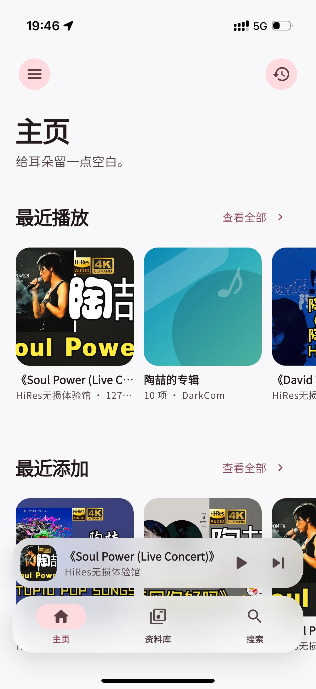
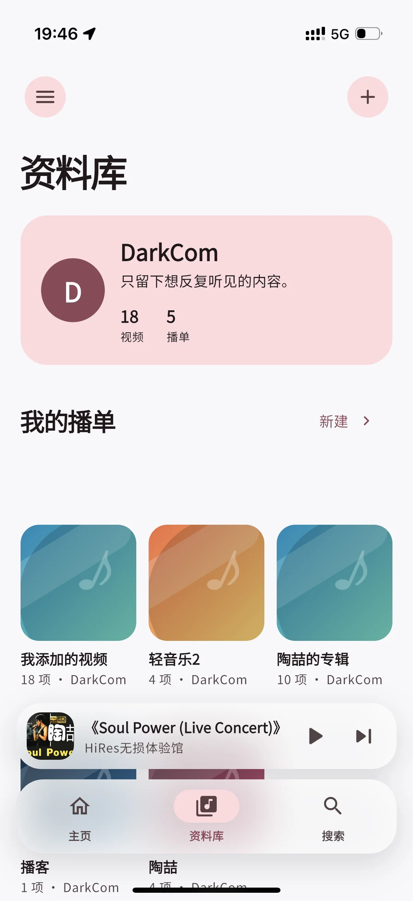
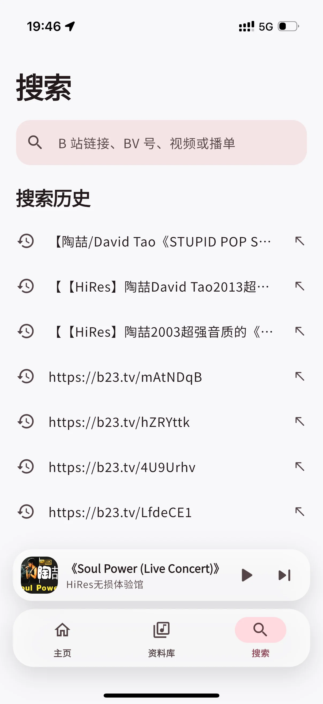
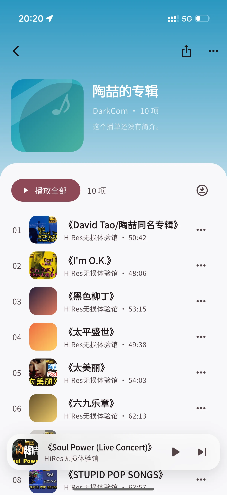
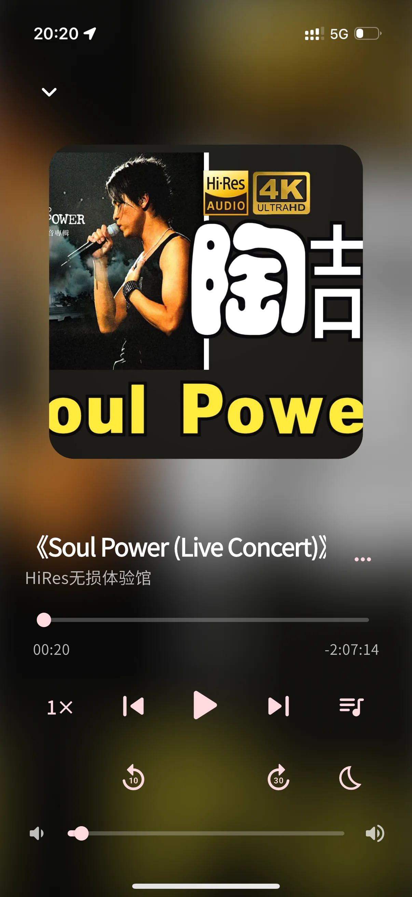

01 / 主页
打开，就是
没听完的那一段。
最近播放与最近添加一眼可见。无需在层层菜单里寻找，熟悉的声音会在你回来时，稳稳停在原处。

给耳朵留一点空白
收藏不该只是落灰。
让每一个值得听见的视频，重新流动起来。
01 / 主页
最近播放与最近添加一眼可见。无需在层层菜单里寻找，熟悉的声音会在你回来时，稳稳停在原处。

02 / 资料库
视频与播单都归入你的个人资料库。按心情、歌手或主题整理，让每次想听都有清晰入口。

03 / 搜索
支持 B 站链接、BV 号、视频或播单搜索。复制、粘贴、收好，省去冗长步骤，把时间留给真正想听的内容。

04 / 播单
从专辑到长视频合集，统一收进顺手的播放队列。封面、作者、时长清晰排布，下一首始终心中有数。

05 / 播放
倍速、快退、快进、播放队列与睡眠定时都在触手可及的位置。长内容也能听得从容，听得专心。
